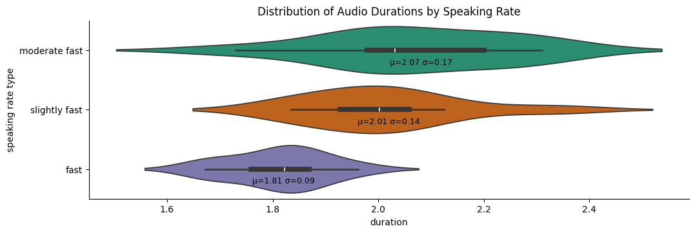
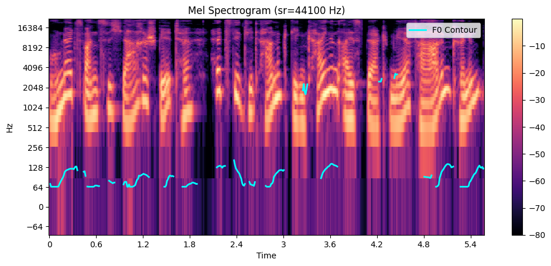

This audio comparison is part of a master's thesis in which we fine-tuned the Parler Text-to-Speech (TTS) model to generate German speech. Through prompt engineering, we were able to enhance the model's ability to produce high-quality German speech outputs. We would like to thank the authors of Parler-TTS and reference their paper (Lorenzo et al., 2024) for providing recipes for training and fine-tuning. Additionally, we extend our gratitude to Thorsten Voice for making approximately 35 hours of his voice available for this project.
The following sections demonstrate the model's progress and the test to check the conditioning of speech rate.
This section showcases the progress in the model's learning by comparing audio samples generated with different steps (505 and 2020). It helps to demonstrate the improvements in pronunciation, fluency, and overall quality as the model is fine-tuned.
| Content | Description | GT | Parler TTS Models | ||
|---|---|---|---|---|---|
| ParlerMiniV1 | GerParlerTTS-505 | GerParlerTTS-2020 | |||
| Mittlerweile hatte ich mich an die Fliehkräfte gewöhnt und konnte wieder normal sprechen. | Thorsten speaks at a slightly quick pace with a monotone tone, and despite some minimal background noise, the recording sounds as if it was made in a very close environment. | ||||
| Kennst du die Vorgeschichte dazu? | Thorsten speaks very quickly, maintaining a monotone tone, and the recording appears to be very close, with a slight background noise. | ||||
| Meine Bedenken mögen euch nicht passen, sie sind aber berechtigt! | Thorsten speaks at a fast pace with a monotone voice, but the recording quality seems slightly poor due to a bit of background noise, as if he is speaking from a very close proximity. | ||||
This section tests whether speech rate is changed for changing speech rate prompt: "Thorsten delivers his speech at a {speech_rate} pace."
| Speech Rate | German-Parler-TTS |
|---|---|
| Moderate Fast (2.06s) | |
| Slightly Fast (1.88s) | |
| Fast (1.82s) |
This section tests whether the pitch contour is changed when prompting different 'speech monotony': "Thorsten's voice with a slightly fast pace in a {speech_monotony} tone. He is in a room with no noise, suggesting a high-quality recording."
| Pitch | Pitch contour | German-Parler-TTS |
|---|---|---|
| Monotone | ||
| Slightly expressive and animated |  | |
| Very expressive and animated |